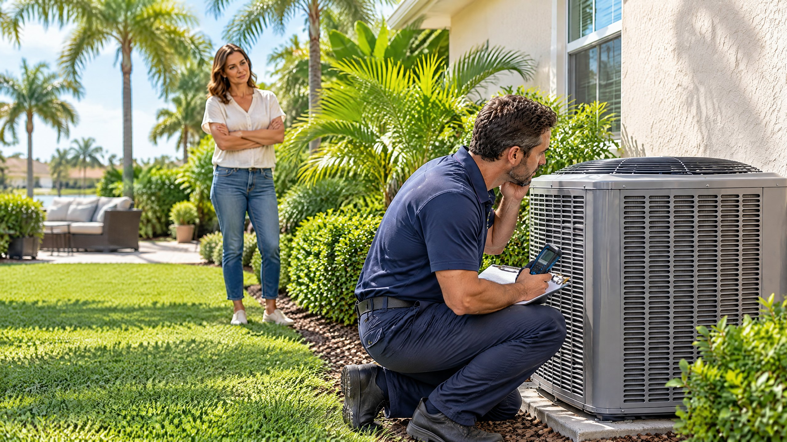

Direct Answer
If the outside AC unit hums while its fan stays still, the system may have a weak or failed capacitor, a seized fan motor, a damaged blade, a contactor or control problem, or another electrical fault. Turn cooling off, do not reach through the grille or push the blade, and request diagnosis before restarting the system.

The outdoor unit and indoor blower use different motors and controls, so indoor air may still move while the top fan outside remains still. A focused AC repair evaluation should compare the call for cooling with the components that started and the measurements they produced.
What the Outdoor Fan Does
The outside fan is the condenser fan. Trane explains that it pulls outdoor air through the condenser coil so the system can release heat removed from the home.[3] The indoor blower, by comparison, moves household air across the evaporator coil and through the ducts.
If the condenser fan stays still, heat cannot leave the outdoor coil normally. The compressor or a protective control may stop, the outdoor cabinet may become unusually hot, and indoor cooling may weaken or disappear. Turn cooling off rather than continuing to make repeated thermostat calls.
What to Do When the Unit Hums but the Fan Stays Still
- Turn cooling off at the thermostat. Stop the call for cooling so the outdoor unit is not repeatedly trying to start.
- Observe from outside the cabinet. Note whether the fan is completely still, turns slowly, wobbles, or starts and stops. Listen for a steady hum, repeated clicks, grinding, or silence.
- Check the thermostat setting. Confirm the system was set to Cool with the setpoint below the indoor temperature. Do not repeatedly change modes to force another start.
- Note the breaker position. If the AC breaker is tripped, leave the system off and report it. Do not keep resetting a breaker that trips again.
- Keep hands and tools away from the grille. Do not remove panels, reach toward the blade, or attempt to push-start it.
- Request diagnosis. Report what you heard, what the indoor airflow did, and whether the outdoor fan ever moved.
Do not spin the fan with a stick
A stopped fan can start unexpectedly, a damaged blade can move unpredictably, and an electrical problem remains even if the blade begins turning. Manual spinning does not determine whether the capacitor, motor, control, or another component is responsible.
Common Causes a Technician May Evaluate
| Area | What may be happening | What diagnosis may include |
|---|---|---|
| Run capacitor | The fan motor may receive a call to run but lack the electrical support needed to start or operate correctly | Capacitance, voltage rating, physical condition, wiring, and motor response |
| Condenser-fan motor | Windings, bearings, internal protection, or the motor itself may be damaged or failing | Voltage, current, winding condition, motor temperature, shaft movement, and blade load |
| Fan blade or obstruction | A bent, loose, damaged, or obstructed blade may prevent normal rotation | Blade condition, balance, clearance, hub attachment, and cabinet damage |
| Contactor, wiring, or controls | The fan may not receive the correct power or control response when cooling is requested | Sequence of operation, contactor condition, connections, control voltage, and line voltage |
| Power or protection | A breaker, disconnect, overload, or internal protective device may have interrupted operation | Power supply, repeated trip history, protective-control status, and the condition that triggered it |
| Compressor-related condition | The outdoor unit may hum, cycle, or stop for a reason involving the compressor or shared electrical components | Compressor operation, current, capacitor sections, controls, temperature, and system response |
Carrier lists a run capacitor, condenser-fan motor, damaged blade, breaker, thermostat setting, and compressor condition among the possibilities when an AC fan does not spin.[1] The sound alone cannot separate them.
Capacitor, Fan Motor, or Contactor?
A hum can occur when a motor is asked to run but cannot begin rotating. A capacitor, damaged motor, contactor, wire, control, or supply problem can produce overlapping clues. Diagnosis should compare the cooling call with measured capacitance, voltage, current, wiring, blade movement, motor condition, and sequence of operation.
If testing confirms the component, On The Way provides AC capacitor replacement, condenser fan motor repair, and AC contactor replacement. Those services should follow a measured finding rather than a guess based on humming alone.
Why the System Should Remain Off
When the condenser fan does not rotate, the system cannot release heat normally. Carrier advises turning the system off because continued operation can overheat outdoor equipment.[1] Leave the cabinet closed and do not handle the capacitor or terminals; capacitors can retain a high-voltage charge after power is removed.[1]
What a Focused Service Visit May Include
ENERGY STAR’s maintenance checklist calls for checking electrical connections, measuring voltage and current on motors, checking system controls and startup sequence, and cleaning condenser coils as part of professional cooling-system care.[2] For a humming outdoor unit with a stopped fan, the exact visit depends on what the equipment does when tested.
- Operating sequence: Does the thermostat call reach the outdoor unit, and do the contactor, compressor, and fan respond in the correct order?
- Electrical measurements: Is the correct voltage present, does the capacitor test within the equipment requirement, and what current does the motor draw?
- Mechanical condition: Does the motor shaft rotate normally when de-energized, and are the blade, hub, grille, and cabinet intact?
- Motor condition: Are the windings, internal protection, bearings, and operating temperature consistent with normal operation?
- Condenser condition: Is outdoor airflow blocked, and does the coil need service after the electrical or mechanical cause is addressed?
A replacement part should match the equipment specifications and the measured failure. Replacing a capacitor will not correct a seized motor, and replacing a motor will not correct a contactor or power problem.
What to Tell the Technician
Report whether the fan was still, slow, or wobbling; whether the hum was steady or intermittent; whether indoor airflow continued; whether the breaker tripped; and whether you noticed grinding, an electrical odor, or recent work near the unit. Keep the cabinet closed.
When to Request AC Repair
Request service when the outdoor unit hums but the condenser fan does not rotate, when the blade turns slowly or wobbles, when a breaker trips again, or when the outdoor unit becomes unusually hot. The related guide to an AC that runs but does not cool covers broader causes when the fan symptom is not clear.
On The Way Heating & Air is local and family-rooted. Dustin Miller began working in HVAC with his father in 2006 and has helped build several service companies. The goal is to identify the failed circuit or component, explain the measurements, and recommend the repair that addresses the cause.
Frequently Asked Questions
Can I run my AC if the outside fan is not spinning?
Turn cooling off when the outdoor unit hums but the condenser fan does not rotate. The outdoor fan moves air through the condenser coil so the system can release heat. Continuing to call for cooling can add heat and stress while the underlying electrical or mechanical problem remains.
Does a humming outdoor AC always mean the capacitor failed?
No. A weak or failed run capacitor is one possibility, but a failing fan motor, damaged blade, contactor or wiring problem, voltage issue, control fault, or compressor-related condition can create a similar symptom. Measurements are needed before selecting a repair.
Should I push the AC fan blade with a stick?
No. Do not reach through the grille or try to start the fan manually. The equipment can start unexpectedly, the blade may be damaged, and the cabinet contains electrical components that can retain energy after power is removed.
How does a technician tell whether the capacitor or fan motor is bad?
A technician can check the operating sequence, electrical supply, capacitance, motor voltage and current, wiring and contactor condition, blade movement, motor temperature, and winding condition. Those findings separate a capacitor problem from a motor, control, blade, or power issue.
Sources
- Carrier: AC Fan Not Spinning? Here’s Why and How to Fix It
- ENERGY STAR: Heating and Cooling Maintenance Checklist
- Trane: AC Fan Not Working? Reasons Why It Stopped Spinning
Reviewed by a Local HVAC Owner
Dustin Miller, Owner of On The Way Heating & Air. Dustin began working in HVAC with his father in 2006 and has helped build several service companies. This article provides general homeowner guidance; a humming outdoor unit with a stopped fan can involve the capacitor, fan motor, blade, contactor, wiring, controls, power supply, compressor, or more than one condition.